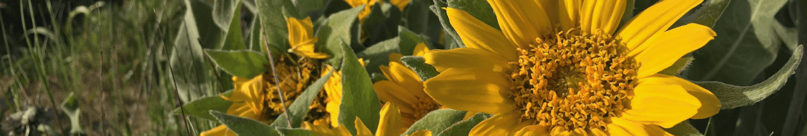

You, your local and global community, and every insect, bird, plant, mushroom, and amphibian in your yard deserves a restored, flourishing ecosystem; and you can be the one to make it happen! Read our Manifesto!
Founded in 2020, Restoration Gardening Co. endeavors to put place and life back into the intentional landscape by designing for habitat and ecosystem functions, using locally and ethically sourced seed, plants, and other materials, and installing and maintaining with minimal noise, disruption, and waste.
We would love to collaborate with you and connect your space back to the heartbeat of the planet﹘Please drop us a line!
(510) 473-6805
Serving Oakland, Piedmont, Alameda and the broader East Bay!